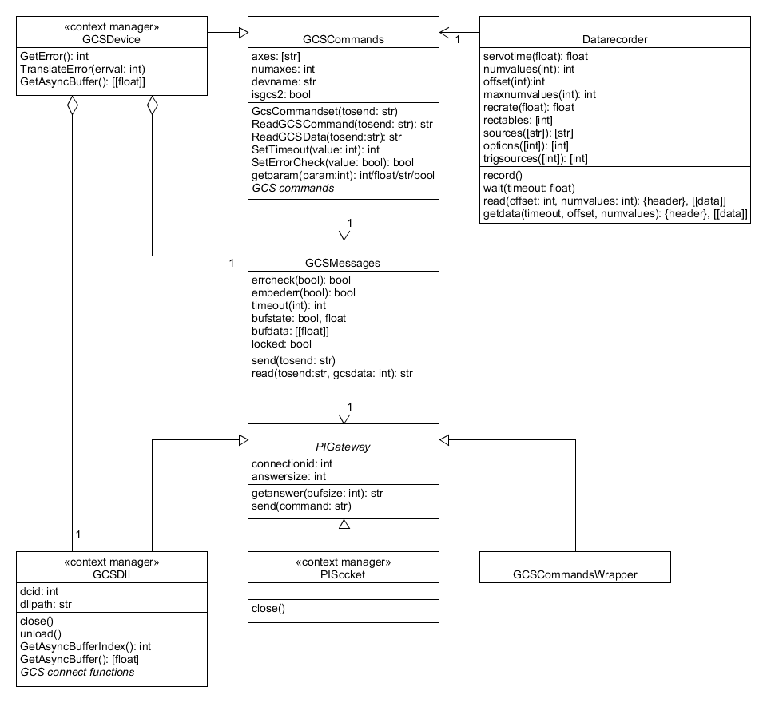

Package overview
Diagram of PIPython
PIPython is made of three layers. The commands layer provides GCS commands, the message layer handles GCS messages and the communication layer connects the device.
The following diagram only shows the public items of the classes.

Layers
Commands layer
Modules: pipython.gcscommands, pipython.gcsdevice
A GCSCommands instance provides functions for the GCS commands and properties of the connected device and stages. For each GCS function there is an according "Has" function which returns True if the connected device supports this command.
A GCSDevice instance inherits from GCSCommands and provides access to some properties and methods of the GCSDll, too. It needs a GCSDll instance and does not work with PISocket. GCSDevice is a context manager that will unload the GCSDll.
Message layer
Modules: pipython.gcsmessages
A GCSMessage instance connects a communication gateway and a GCSCommands instance.
It delivers the command string from a GCS command to the gateway. A proper line ending is made. For query commands it returns the answer from the gateway when it has received a GCS conforming end of message signature. Then optionally the error state is queried from the gateway. A background thread to read out big GCS data is provided.
Comunication layer
Modules: pipython.interfaces.pigateway, pipython.interfaces.gcsdll, pipython.interfaces.pisocket
This is the gateway to a device. A connection to the device is established automatically, by provided commands or the device is already connected.
Usually you will use an GCSDll instance which will be able to connect a GCS device over RS-232, USB, TCP/IP, GPIB, PCI and daisy chain. On platforms where no GCS DLL is available you can use the PISocket over TCP/IP. The GCSCommandsWrapper is for internal use only.
The socket module is called pisocket to not interfere with the builtin module. But it is a plain python socket without any GCS implementations.
Inherit from the interface (in terms of "base class") PIGateway when implementing other gateways.